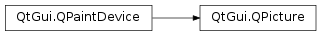

QPicture¶
Synopsis¶
Functions¶
Static functions¶
- def
inputFormatList() - def
inputFormats() - def
outputFormatList() - def
outputFormats() - def
pictureFormat(fileName)
Detailed Description¶
The
PySide2.QtGui.QPictureclass is a paint device that records and replaysPySide2.QtGui.QPaintercommands.A picture serializes painter commands to an IO device in a platform-independent format. They are sometimes referred to as meta-files.
Qt pictures use a proprietary binary format. Unlike native picture (meta-file) formats on many window systems, Qt pictures have no limitations regarding their contents. Everything that can be painted on a widget or pixmap (e.g., fonts, pixmaps, regions, transformed graphics, etc.) can also be stored in a picture.
PySide2.QtGui.QPictureis resolution independent, i.e. aPySide2.QtGui.QPicturecan be displayed on different devices (for example svg, pdf, ps, printer and screen) looking the same. This is, for instance, needed for WYSIWYG print preview.PySide2.QtGui.QPictureruns in the default system dpi, and scales the painter to match differences in resolution depending on the window system.Example of how to record a picture:
picture = QPicture() painter = QPainter() painter.begin(picture) # paint in picture painter.drawEllipse(10,20, 80,70) # draw an ellipse painter.end() # painting done picture.save("drawing.pic") # save pictureNote that the list of painter commands is reset on each call to the
QPainter.begin()function.Example of how to replay a picture:
picture = QPicture() picture.load("drawing.pic") # load picture painter = QPainter() painter.begin(myImage) # paint in myImage painter.drawPicture(0, 0, picture) # draw the picture at (0,0) painter.end() # painting donePictures can also be drawn using
PySide2.QtGui.QPicture.play(). Some basic data about a picture is available, for example,PySide2.QtGui.QPicture.size(),PySide2.QtGui.QPicture.isNull()andPySide2.QtGui.QPicture.boundingRect().See also
-
class
PySide2.QtGui.QPicture(arg__1)¶ -
class
PySide2.QtGui.QPicture([formatVersion=-1]) Parameters: - arg__1 –
PySide2.QtGui.QPicture - formatVersion –
PySide2.QtCore.int
Constructs a copy of
pic.This constructor is fast thanks to implicit sharing .
Constructs an empty picture.
The
formatVersionparameter may be used to create aPySide2.QtGui.QPicturethat can be read by applications that are compiled with earlier versions of Qt.Note that the default formatVersion is -1 which signifies the current release, i.e. for Qt 4.0 a formatVersion of 7 is the same as the default formatVersion of -1.
Reading pictures generated by earlier versions of Qt is not supported in Qt 4.0.
- arg__1 –
-
PySide2.QtGui.QPicture.boundingRect()¶ Return type: PySide2.QtCore.QRectReturns the picture’s bounding rectangle or an invalid rectangle if the picture contains no data.
-
PySide2.QtGui.QPicture.data()¶ Return type: PyObject Returns a pointer to the picture data. The pointer is only valid until the next non-const function is called on this picture. The returned pointer is 0 if the picture contains no data.
-
static
PySide2.QtGui.QPicture.inputFormatList()¶ Return type: list of strings Returns a list of picture formats that are supported for picture input.
Note that if you want to iterate over the list, you should iterate over a copy, e.g.
list = QPicture.inputFormatList() for string in list: myProcessing(string)
-
static
PySide2.QtGui.QPicture.inputFormats()¶ Return type: Returns a list of picture formats that are supported for picture input.
-
PySide2.QtGui.QPicture.isNull()¶ Return type: PySide2.QtCore.boolReturns
trueif the picture contains no data; otherwise returns false.
-
PySide2.QtGui.QPicture.load(dev[, format=nullptr])¶ Parameters: - dev –
PySide2.QtCore.QIODevice - format – str
Return type: PySide2.QtCore.boolThis is an overloaded function.
devis the device to use for loading.- dev –
-
PySide2.QtGui.QPicture.load(fileName[, format=nullptr]) Parameters: - fileName – unicode
- format – str
Return type: PySide2.QtCore.boolLoads a picture from the file specified by
fileNameand returns true if successful; otherwise invalidates the picture and returnsfalse.Please note that the
formatparameter has been deprecated and will have no effect.See also
-
static
PySide2.QtGui.QPicture.outputFormatList()¶ Return type: list of strings Returns a list of picture formats that are supported for picture output.
Note that if you want to iterate over the list, you should iterate over a copy, e.g.
list = QPicture.outputFormatList() for string in list: myProcessing(string)
-
static
PySide2.QtGui.QPicture.outputFormats()¶ Return type: Returns a list of picture formats that are supported for picture output.
-
static
PySide2.QtGui.QPicture.pictureFormat(fileName)¶ Parameters: fileName – unicode Return type: str Returns a string that specifies the picture format of the file
fileName, or 0 if the file cannot be read or if the format is not recognized.
-
PySide2.QtGui.QPicture.play(p)¶ Parameters: p – PySide2.QtGui.QPainterReturn type: PySide2.QtCore.boolReplays the picture using
painter, and returnstrueif successful; otherwise returnsfalse.This function does exactly the same as
QPainter.drawPicture()with (x, y) = (0, 0).
-
PySide2.QtGui.QPicture.save(dev[, format=nullptr])¶ Parameters: - dev –
PySide2.QtCore.QIODevice - format – str
Return type: PySide2.QtCore.boolThis is an overloaded function.
devis the device to use for saving.- dev –
-
PySide2.QtGui.QPicture.save(fileName[, format=nullptr]) Parameters: - fileName – unicode
- format – str
Return type: PySide2.QtCore.boolSaves a picture to the file specified by
fileNameand returns true if successful; otherwise returnsfalse.Please note that the
formatparameter has been deprecated and will have no effect.See also
-
PySide2.QtGui.QPicture.setBoundingRect(r)¶ Parameters: r – PySide2.QtCore.QRectSets the picture’s bounding rectangle to
r. The automatically calculated value is overridden.
-
PySide2.QtGui.QPicture.setData(data)¶ Parameters: data – str Sets the picture data directly from
dataandsize. This function copies the input data.
-
PySide2.QtGui.QPicture.size()¶ Return type: PySide2.QtCore.uintReturns the size of the picture data.
See also
-
PySide2.QtGui.QPicture.swap(other)¶ Parameters: other – PySide2.QtGui.QPictureSwaps picture
otherwith this picture. This operation is very fast and never fails.
© 2018 The Qt Company Ltd. Documentation contributions included herein are the copyrights of their respective owners. The documentation provided herein is licensed under the terms of the GNU Free Documentation License version 1.3 as published by the Free Software Foundation. Qt and respective logos are trademarks of The Qt Company Ltd. in Finland and/or other countries worldwide. All other trademarks are property of their respective owners.